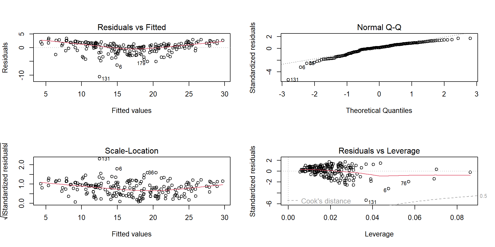

Linear Regression in R
In many practical situations we want to identify various types of relationships between variables. Regression analysis is a statistical technique for investigating and modeling the relationship between variables.
Linear regression attempts to model the relationship between a scalar response (or dependent variable) and one or more explanatory variables (or independent variables) by fitting a linear equation to observed data. The case of one explanatory variable is called simple linear regression.
3.8 Loading required R packages
The following R packages are required for this chapter:
ggplot2for data visualizationdatariumdata bank for statistical analysis and visualization- The
ggpairs()function of theGGallypackage allows to build a great scatterplot matrix.
- We are going to use the marketing data set available in
datariumpackage, which contains the impact of the amount of money spent on three advertising medias (youtube, Facebook and newspaper) on sales.
3.9 Load Data set
<<<<<<< HEAD ======= <<<<<<< HEADdata(marketing)
head(marketing)data(marketing)
head(marketing)## youtube facebook newspaper sales
## 1 276.12 45.36 83.04 26.52
## 2 53.40 47.16 54.12 12.48
## 3 20.64 55.08 83.16 11.16
## 4 181.80 49.56 70.20 22.20
## 5 216.96 12.96 70.08 15.48
## 6 10.44 58.68 90.00 8.64## youtube facebook newspaper sales
## Min. : 0.84 Min. : 0.00 Min. : 0.36 Min. : 1.92
## 1st Qu.: 89.25 1st Qu.:11.97 1st Qu.: 15.30 1st Qu.:12.45
## Median :179.70 Median :27.48 Median : 30.90 Median :15.48
## Mean :176.45 Mean :27.92 Mean : 36.66 Mean :16.83
## 3rd Qu.:262.59 3rd Qu.:43.83 3rd Qu.: 54.12 3rd Qu.:20.88
## Max. :355.68 Max. :59.52 Max. :136.80 Max. :32.403.10 Explore data
3.10.1 Scatterplot
- Usually, the first step in regression analysis is to construct a scatter plot (or scatter matrix).
ggplot(data = marketing, aes(x = facebook, y = sales)) +
geom_point() +
theme(aspect.ratio = 1)+
xlab("Sales")+
ylab("facebook")
3.10.2 Scatterplot matrix
- The
ggpairs()function of theGGallypackage allows to build a great scatterplot matrix. - Scatterplots of each pair of numeric variable are drawn on the left part of the figure.
- Pearson correlation is displayed on the right.
- Variable distribution is available on the diagonal.
# Check correlations (as scatterplots), distribution and print corrleation coefficient
ggpairs(marketing, title="correlogram with ggpairs()") +
theme(aspect.ratio = 1)- The term \(corr\) is the Pearson product-moment correlation coefficient (\(r\)).
- It is a measure of the linear correlation of two variables.
- It is a number that ranges from -1 to 0 to +1, representing th strength of the linear relationship between the variables.
- An \(r\) value of \(+1\) denotes a perfect linear positive relationship between two variables.
- An \(r\) value of \(-1\) denotes a perfect linear negative relationship between two variables, which indicates an inverse relationship between two variables: as one variable gets larger, the other gets smaller.
- An \(r\) value of 0 means no linear relationship is present between the two variables (There can be a non-linear relationship.)
3.11 Simple Linear Regression
The most elementary regression model is called simple linear regression.
The variable to be predicted is called the dependent variable an is denoted by \(y\).
The predictor is called the independent variable or explanatory variable and is denoted by \(x\)
In simple linear regression analysis, only a strait-line relationship between two variables is examined.
##
## Call:
## lm(formula = sales ~ facebook, data = marketing)
##
## Coefficients:
## (Intercept) facebook
## 11.1740 0.2025##
## Call:
## lm(formula = sales ~ facebook, data = marketing)
##
## Residuals:
## Min 1Q Median 3Q Max
## -18.8766 -2.5589 0.9248 3.3330 9.8173
##
## Coefficients:
## Estimate Std. Error t value Pr(>|t|)
## (Intercept) 11.17397 0.67548 16.542 <2e-16 ***
## facebook 0.20250 0.02041 9.921 <2e-16 ***
## ---
## Signif. codes: 0 '***' 0.001 '**' 0.01 '*' 0.05 '.' 0.1 ' ' 1
##
## Residual standard error: 5.13 on 198 degrees of freedom
## Multiple R-squared: 0.332, Adjusted R-squared: 0.3287
## F-statistic: 98.42 on 1 and 198 DF, p-value: < 2.2e-163.11.1 Residual Analysis
<<<<<<< HEAD ======= <<<<<<< HEADpar(mfrow = c(2,2))
plot(reg)par(mfrow = c(2,2))
plot(reg)You want these plots to display random residuals (no patterns) that are uncorrelated and uniform.
Generally speaking, if you see patterns in the residuals, your model has a problem, and you might not be able to trust the results.
Heteroscedasticity produces a distinctive fan or cone shape in residual plots.
To check for heteroscedasticity, you need to assess the residuals by fitted value plots specifically.
Typically, the telltale pattern for heteroscedasticity is that as the fitted values increases, the variance of the residuals also increases.
Read more about residual analysis:
- Montgomery, D. C., Peck, E. A., & Vining, G. G. (2012). Introduction to linear regression analysis (Vol. 821). John Wiley & Sons.
3.12 Multiple Linear Regression
Regression models with more than one independent variable can be explored by using multiple regression models.
We want to build a model for estimating sales based on the advertising budget invested in youtube, facebook and newspaper, as follow:
\[sales = \beta_0 + \beta_1*youtube + \beta_2*facebook + \beta_3*newspaper\]
You can compute the model coefficients in R as follow:
##
## Call:
## lm(formula = sales ~ youtube + facebook + newspaper, data = marketing)
##
## Residuals:
## Min 1Q Median 3Q Max
## -10.5932 -1.0690 0.2902 1.4272 3.3951
##
## Coefficients:
## Estimate Std. Error t value Pr(>|t|)
## (Intercept) 3.526667 0.374290 9.422 <2e-16 ***
## youtube 0.045765 0.001395 32.809 <2e-16 ***
## facebook 0.188530 0.008611 21.893 <2e-16 ***
## newspaper -0.001037 0.005871 -0.177 0.86
## ---
## Signif. codes: 0 '***' 0.001 '**' 0.01 '*' 0.05 '.' 0.1 ' ' 1
##
## Residual standard error: 2.023 on 196 degrees of freedom
## Multiple R-squared: 0.8972, Adjusted R-squared: 0.8956
## F-statistic: 570.3 on 3 and 196 DF, p-value: < 2.2e-163.12.1 How to test if your linear model has a good fit?
Most common value to check how good is your model is the coefficient of determinations or \(R^2\)
As we have seen in simple linear regression, the overall quality of the model can be assessed by examining the R-squared (\(R^2\)).
\(R^2=0.05602\) means that the model explains only 5% of the data variability.
\(R^2\) represents the proportion of variance, in the outcome variable \(y\), that may be predicted by knowing the value of the \(x\) variables.
An \(R^2\) value close to 1 indicates that the model explains a large portion of the variance in the outcome variable.
The second one has an \(R^2\) of 0.89, and the model can explain \(89\%\) of the total variability.
In the regression summary output notice that there’s two different \(R^2\), one multiple and one adjusted.
One problem with this \(R^2\) is that it will always increase when more variables are added to the model, even if those variables are only weakly associated with the response (i.e. these variables don’t add anything to your predictions)
For this reason, the adjusted \(R^2\) is probably better to look at if you are adding more than one variable to the model, since it only increases if it reduces the overall error of the predictions.
The adjustment in the Adjusted R Square value in the summary output is a correction for the number of x variables included in the prediction model.
NOTE
In our example, with youtube, newspaper and facebook predictor variables, the adjusted \(R^2 = 0.89\), meaning that “89% of the variance in the measure of sales can be predicted by youtube, newspaper and facebook advertising budgets.
This model is better than the simple linear model with only facebook, which had an adjusted \(R^2\) of 0.05.
3.12.2 Don’t forget to look at the residuals
You can have a pretty good \(R^2\) in your model, but let’s not rush to conclusions here.
Ideally, when you plot the residuals, they should look random. Otherwise, it means that maybe there is a hidden pattern that the linear model is not considering.

3.13 Prediction for new data set
- Using the above model, we can predict the sales for a new advertising budget.
new.budget <- data.frame(
youtube = c(150, 200, 100),
facebook = c( 150, 100, 200),
newspaper = c(0,0,0)
)
new.budget## youtube facebook newspaper
## 1 150 150 0
## 2 200 100 0
## 3 100 200 0## 1 2 3
## 38.67087 31.53260 45.80914Simple Linear regression
## 1 2 3
## 21.29875 31.42354 51.67312